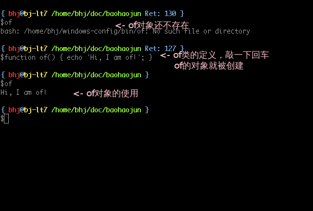

在shell脚本里使用Abstract Factory的设计模式
Abstract Factory的定义见 wikipedia 。
在不同的平台下，我需要分别定义一组函数/命令， 比如 of ，其作用是在命
令行下用图形程序打开参数指定的文件或URL（ of 是 “open file”之意）；又
比如 oc ，“open container”，其作用是用文件管理器打开参数指定的文件所
在文件夹并选定该文件。
这个需求非常符合 Abstract Factory 设计模式的使用场景，请听我慢慢道来。
比如，重复上面的叙述，虚拟的 of 的定义为：在命令行下用图形程序打开参
数指定的文件或URL。具体的 of 的定义则是（以linux为例）：在linux命令行
下用linux图形程序打开参数指定的文件或URL。 （比如 of readme.txt ，在
Windows平台下应该用notepad.exe打开该文本文件（取决于注册表中的文件关
联），而在Linux平台下应该用相应的例如gedit程序来打开此文件。）
（ of 命令最早是受到了 cygwin 下 cygstart 命令的启发。而 cygstart 其
实是受 windows 下 cmd.exe 自带的 start 命令启发；并且 Linux 底下也有类
似功能的 xdg-open 和 gnome-open 命令。但非要去记不同的环境下一定要敲不
同的命令实在是一件让人痛苦的事情，就像面象对象编程用虚函数解决掉了
giant “switch” 语句的问题，我们也可以用抽象工厂模式来抹除这种痛苦。）
我需要一个工厂虚类，通过它我可以创建虚拟的 of/oc 命令。在linux下，有
一个具体的工厂，通过它我可以创建具体的linux版本的 of/oc 命令；在
windows下，也有一个具体的工厂，通过它我可以创建具体的windows版本的
of/oc 命令。
如果一定要把类、对象的比喻进行到底的话，这里所说的工厂虚类我们可以把它
等同于文件的概念。则相应的linux工厂实类的定义就是“一个实现了linux版 of
命令创建功能的文件”。在面向对象编程中，虚类是无法创建直接对应于它的对象
的；但linux工厂实类我们可以为它创建一个对象，也就是一个实际存在于文件系
统中的文件（而不再是口头说说的、概念上的文件）： $HOME/.bashrc-linux
（注意我们只能创建一个这样的对象，如果你自己把这个对象拷贝一份到
$HOME/.bashrc-linux.bak 的话也是可以的——但系统不认，请问这叫什么
design pattern？）。接下来linux版 of 实类的定义类似于 function of() { ... } ，要为它创建一个对象的话，我们需要把这段定义交给bash命令行执行
一下，见下图：

在 .bashrc-linux 这个工厂里，我们这样定义linux版的 of ：
function of() { gnome-open "$@" > /dev/null 2>&1 }
而在 .bashrc-windows 这个工厂里，我们这样定义windows版的 of ：
function of() { cygstart "$@" > /dev/null 2>&1 }
抽象工厂模式里一般在程序刚开始的时候决定使用哪个具体的工厂，所以在我的 .bashrc 里：
if test `uname` = Linux; then factory=~/.bashrc-linux else factory=~/.bashrc-windows fi
最后，我们让工厂开工，一次性制造出我们想要的 of/oc 以及其他 概念上平 台无关，实现上平台相关，故曰之抽象 的 一系列，故曰之工厂 的命令：
function Start() { source "$2" } Start the "$factory" and claim deep understanding about Abstract Factory design pattern\! No kidding\!
这就是我对抽象工厂模式的理解，您觉得呢？